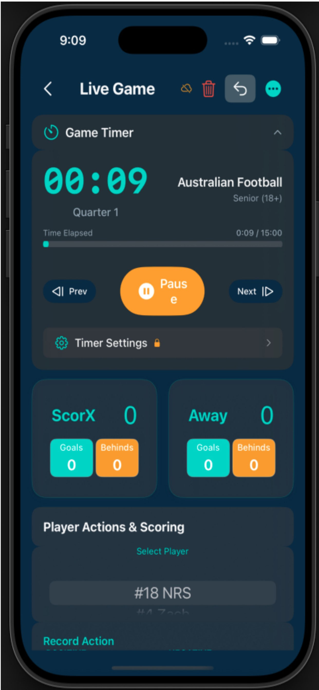
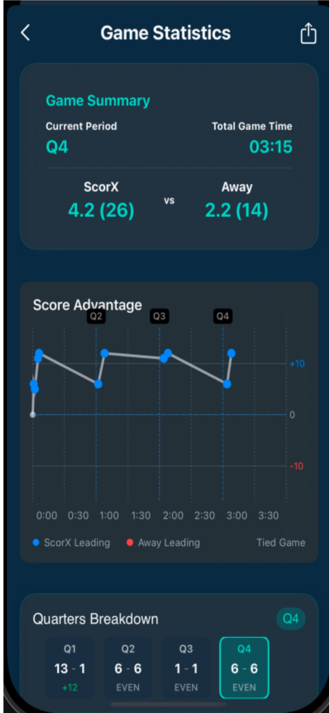
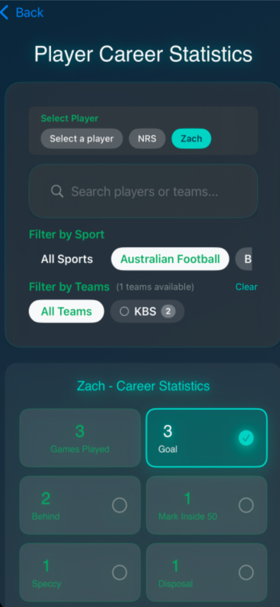
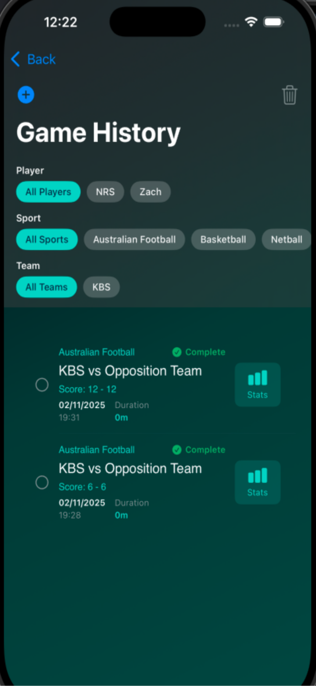
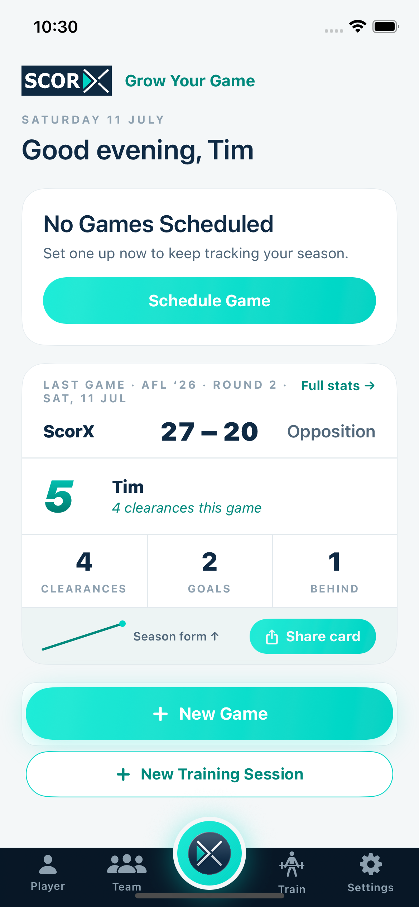
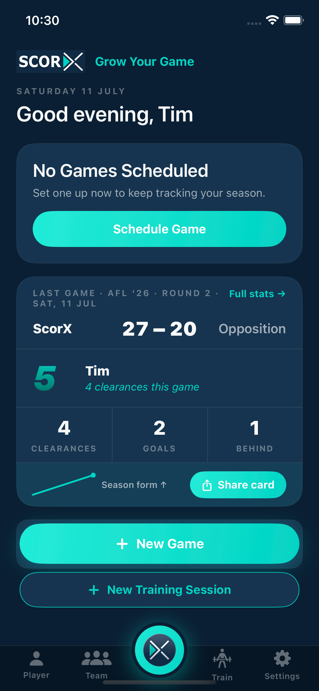

ScorX is the junior athlete development app that transforms game statistics into actionable training plans. From AI-powered sports training recommendations to athleticism benchmarking—everything coaches and parents need for youth athletic development.
Family Tier
Family Tier
Coach Tier
Family Tier
From game day scoring to development analytics
Intuitive tap-based interface lets you record every play as it happens. Sport-specific scoring ensures accuracy across all 16 sports.

Watch player performance metrics update in real-time during games. Track 100+ customisable activities per sport to build comprehensive development data.

Track player development over time with comprehensive career statistics. Identify trends, measure improvement, and build athletic portfolios.

Never lose a game record. All games are automatically saved and archived with searchable filters for comprehensive development tracking.

ScorX adapts to how you like to see the sideline. Switch between a bright, high-contrast light theme and a sleek dark theme — your data and layout stay exactly the same.


ScorX analyses your game statistics after each match to identify skill development priorities and training focus areas. Personalised session recommendations are generated every 30 days or after 5 new games, ensuring your training stays aligned with your actual performance gaps—not guesswork.
Athleticism Benchmarking lets you log sprint speed, vertical jump height, and endurance scores, then compares them against age and gender-specific benchmarks. This helps identify whether development priorities are technical, tactical, or purely athletic—and tracks physical performance trends over time.
Free tier retains 30 days of game history. Family tier retains 2 years of complete game history, giving junior athletes and families a full view of development across multiple seasons.
Yes. ScorX supports 100+ activities across all 16 sports and allows you to customise which activities appear during live scoring. This ensures you capture the statistics most relevant to your player's development priorities.
Yes—ScorX has full offline functionality. Score games anywhere including remote grounds with no mobile coverage. All data syncs automatically via iCloud when a connection is restored (Family tier).
Player Sentiment Tracking lets you record a player's emotional state throughout a match—positive, neutral, or negative. Over time this reveals patterns between mood and performance, helping coaches and families support wellbeing alongside development.
Download free and start tracking your first game in minutes. 30-day free trial of all development features.
Download Free